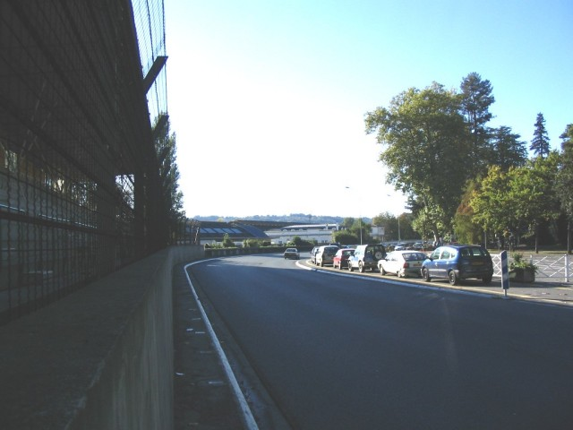
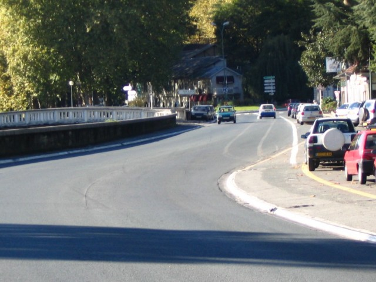
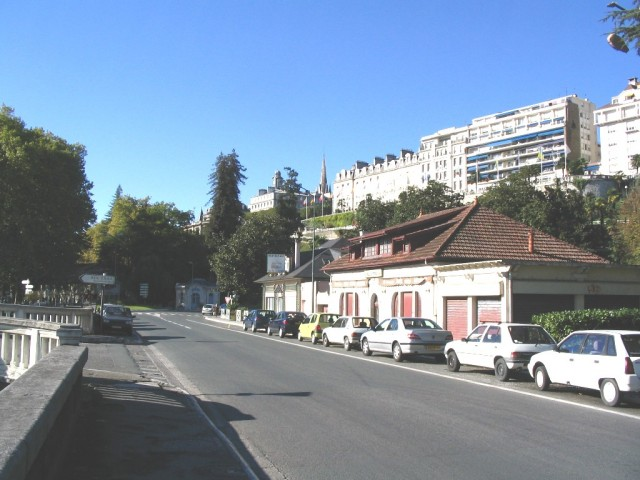
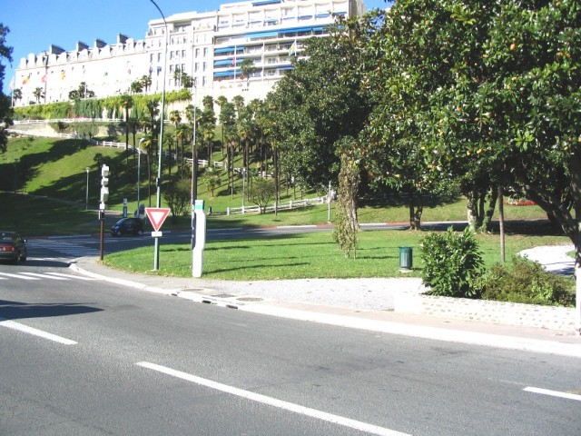
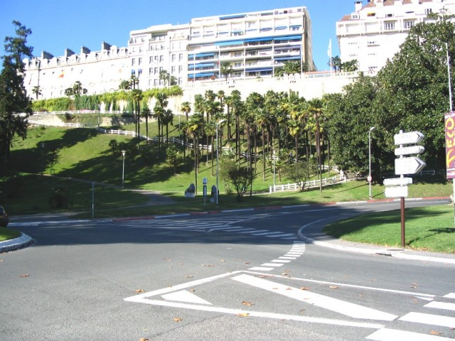
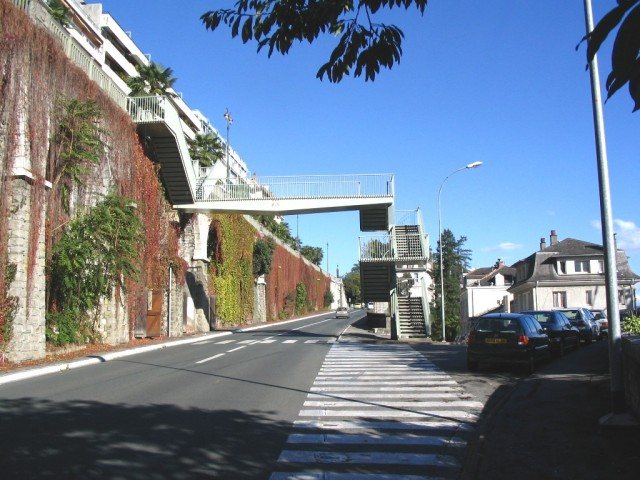

Numbers on map indicate the location of where the photographs were taken.
Pau - Start/Finish & Gare (Page 1 of 5)
|| Contents || La Gare | Pont Oscar & Lycée | Casino & Foch | Bussion & Chicane | Ave. Gaston Lacoste || Home
Numbers on map indicate the location of where the photographs were taken.
Return to racingcircuits.net's Photo Archive Main Index

01 - Fast right curve just after the start.

02 - Exit of this curve.

03 - Braking zone before the Station corner
(virage de la Gare). On the right is the restaurant, and to the
left, the station. In the background ahead, the funicular (funiculaire) building.
We can see the top platform of the funicular just above, between the trees. The balcony
where flags are waving is The Pyranees Boulevard (Boulevard des Pyrénées). The
station roundabout will be taken off for the race days.

04 - Station corner.

05 - Station corner. In front of us, the
palm trees area (Palmeraie) is crowded during the races. Above is the Boulevard
des Pyrénées (not a part of the track, but the best place for spectators to view).

06 - Exit of Station corner, beginning of
the uphill.

07 - Avenue Napoléon Bonaparte, with the
footbridge from the balcony to the paddock.
Photographs & text ©Michel Marti. Reproduced here with kind permission.